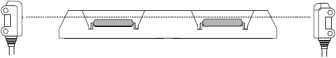
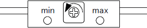

A2-1 How to adjust about device floating sensor of Input shuttle ( 1 )
Photoelectric sensor adjustment for NS-7000 / NS-8000 ( with sensor sensitivity adjuster)
Shuttle IC Floating Sensor Adjustment (with the adjuster)
1. Move the Index Shuttle to the Loading side (P21, 22).
2. Place the shuttle on the shuttle plate.
* Turn the sensor sensitivity adjuster to "max". Confirm that the green lamp is ON.
* If the green lamp is OFF, the light projection/receiving axes may be misaligned. Adjust the sensor position.
3 Place devices on the shuttle pockets.

4 Turn the sensor sensitivity adjuster to "min". Confirm that the both red and green lamps are ON.

5 Gradually turn the sensitivity adjuster toward "max". The lamp status changes from red and green are ON to red and green are OFF, and then, stop turning the adjuster at green lamp is ON.
6 Place a spacer (a plain washer, etc.) below the device to raise the device from the pocket by 0.5 to 0.7 mm. At this point, confirm that the red and green lamps are ON. Try the other pocket with a spacer and check if the lamps properly turn on.
7 Remove the spacer and place the device on the shuttle. Confirm the light can pass through above the device. (Green lamp is ON)
* For small thin devices, mount the SLIT on the sensor so that it becomes easier to adjust the sensor and also the precision is stabilized.
* For NS8000, the sensitivity adjuster is installed on the board. However, the adjusting method is the same as NS7000.